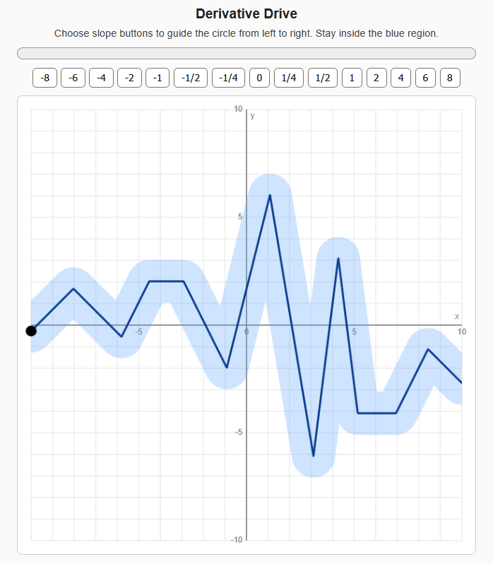
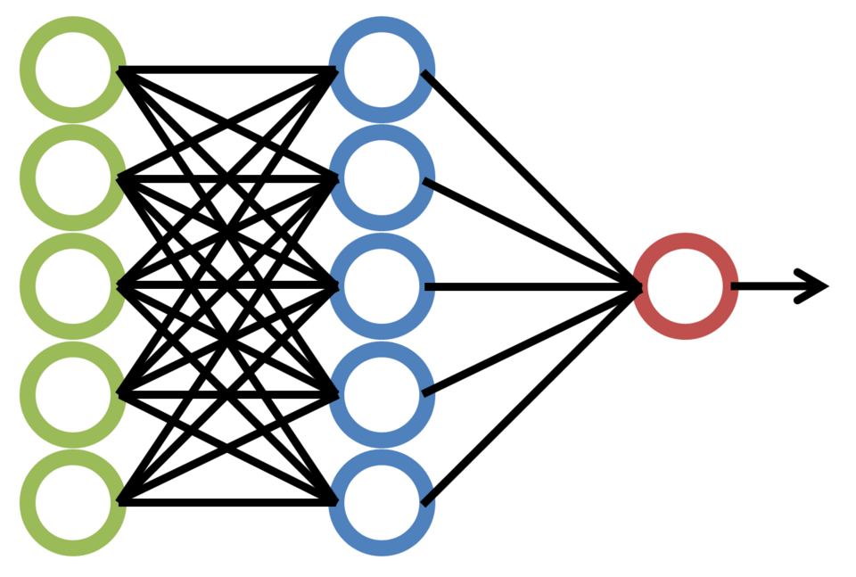
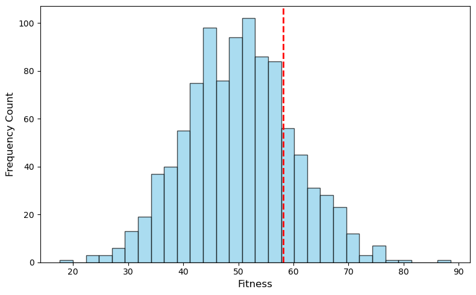

Puzzle Learn
- Developed a full-stack Django web application.
- Used extensive JavaScript to create professional quality interactive games.
- Used API calls to create complex and dynamic activities.
I am a statistics programmer and web designer. I have also taught math, science, and computer science at the primary, secondary, and university levels. Additionally, I design web applications for use in the classroom, and am proficient in R, SQL, HTML, CSS, Python, JavaScript, and Django.


